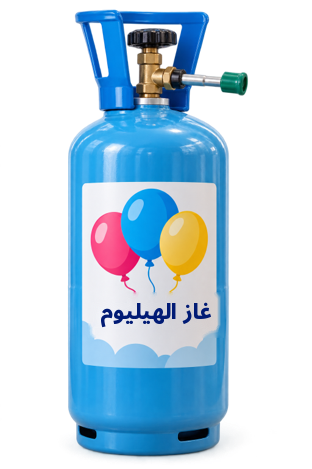
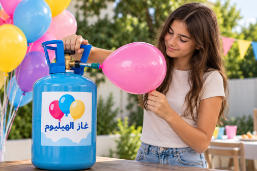
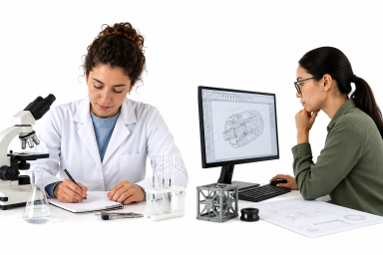
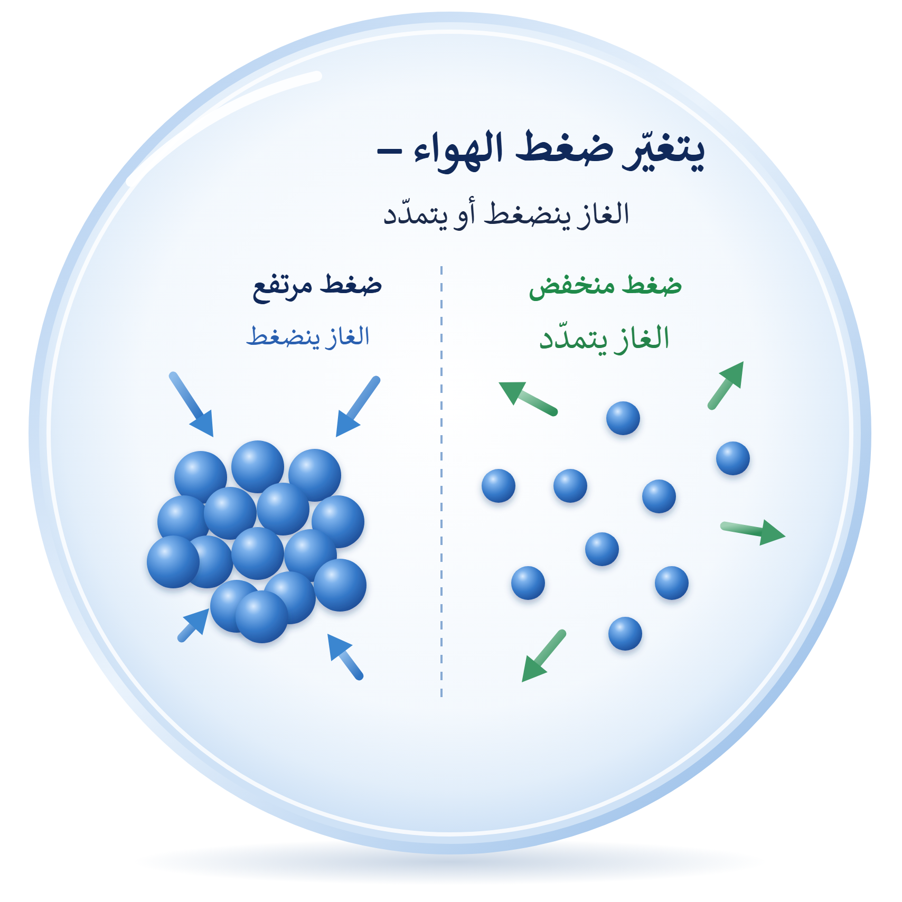

(هذا يعني أننا انتقلنا إلى مستوى أعلى ☺)
تخيّلوا علبة رذاذ يوجد داخلها سائل فقط، دون غاز مضغوط.
ما الذي يُرجَّح أن يحدث عند الضغط على الزر؟
رجال الإطفاء يحملون على ظهورهم أسطوانة هواء صغيرة تكفي للتنفس لدقائق طويلة داخل مبنى مملوء بالدخان.
ابنوا تفسيرًا متعدّد المراحل يوضّح لماذا يكون ذلك ممكنًا.
اسحبوا المراحل الثلاث بالترتيب الصحيح للتفسير (الخاصية، ثم المنتج، وأخيرًا طريقة الاستخدام):
تحتوي أسطوانة الهيليوم المستخدمة لنفخ البالونات على كمية كبيرة من الغاز في حجم صغير.
أ. كيف يمكن إدخال كمية كبيرة كهذه من غاز الهيليوم إلى أسطوانة صغيرة؟

وُزنت أسطوانة الهيليوم وهي ممتلئة، ثم وُزنت مرة أخرى بعد نفخ عدة بالونات بواسطتها.
ب. كيف ستتغيّر كتلة الأسطوانة بعد نفخ البالونات؟

صنّفوا كل عبارة إلى المجموعة الصحيحة:
«سؤال علمي» (لفهم خاصية) أو «هدف تكنولوجي» (لتطوير منتج أو تحسينه).
سؤال علمي
هدف تكنولوجي

نفخ إياد كرة السلة التي يملكها ولاحظ أنه كلما أضاف هواءً، أصبح الضغط عليها أصعب.
قرّر أن يبحث في العلاقة بين كمية الهواء في الكرة ومدى صعوبة الضغط عليها.
أيّ سؤال بحث يناسب الفحص الذي يجريه إياد؟
تعلّمتم أنّ الغاز قابل للانضغاط.
لكن ماذا يحدث إذا تغيّر ضغط الهواء من حولنا؟
عندما يزداد ضغط الهواء المحيط بالغاز – ينضغط الغاز.
عندما يقلّ ضغط الهواء المحيط بالغاز – يتمدّد الغاز.
هيّا نرى كيف يظهر ذلك في موقفين من حياتنا اليومية.

في كيس وجبات خفيفة
أثناء الطيران، يكون ضغط الهواء أقل.
لذلك يتمدّد الهواء الموجود داخل كيس الوجبات الخفيفة،
وينتفخ الكيس.
شاهدوا الفيديو للتوضيح.
زجاجة ماء
عند الهبوط، حين تنخفض الطائرة، يزداد ضغط الهواء المحيط بنا.
الضغط الخارجي يضغط الهواء المحبوس في الزجاجة، ولذلك تنكمش الزجاجة.
ظاهرة مشابهة تحدث أيضًا في آذاننا، ولهذا نشعر أحيانًا أنها «تنسدّ».
شاهدوا الفيديو للتوضيح.
في جميع هذه الأمثلة تعمل الخاصية نفسها التي تعلمتموها:
عندما يتغيّر الضغط على الغاز، قد يتغيّر حجمه أيضًا.